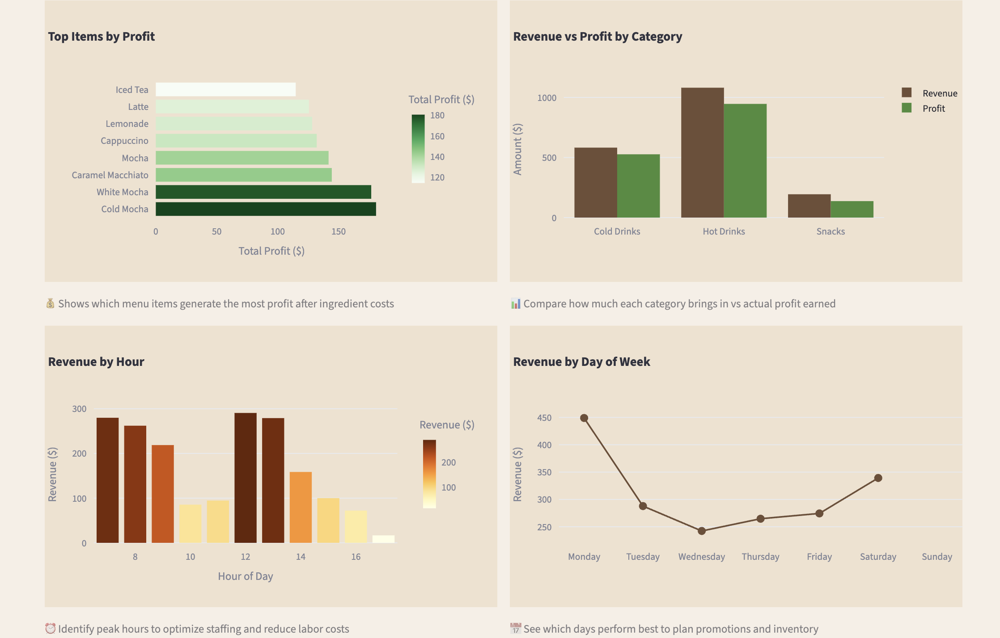

Joseph Nagothu
Business Analytics Graduate Student focused on performance measurement, cost optimization, marketing analytics, and strategic data-driven decision making.
LinkedIn Download ResumeFeatured Projects

Campaign Performance & Optimization Dashboard
Executive reporting dashboard evaluating campaign effectiveness, conversion rates, channel performance, and simulated budget allocation.
Live Dashboard GitHub

Coffee Shop Cost Optimization Dashboard
Operational analytics tool analyzing revenue drivers, ingredient costs, labor impact, and profit margins to identify cost-saving opportunities.
Live Dashboard GitHub